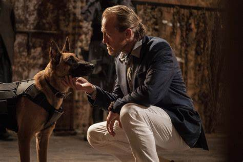

Dieci minuti dopo la conclusione del film precedente, l'ex sicario John Wick è un uomo ricercato ed in fuga a Manhattan. Dopo l'uccisione non autorizzata di Santino D'Antonio, il signore della camorra nonché nuovo membro della Gran Tavola, nell'hotel Continental di New York, John viene dichiarato "scomunicato" e sulla sua testa viene posta una taglia di 14 milioni di dollari. In fuga dai potenziali assassini, John raggiunge la New York Public Library, dove recupera un crocifisso e un medaglione "marcatore" da una pagina segreta in un libro, prima di affrontare e uccidere Ernest, il primo di tanti interessati a incassare la taglia.
Wick si fa strada tra numerosi assassini che lo inseguono fino a una coltelleria, dove li uccide tutti a coltellate. Incontra quindi il Direttore, una donna che lo accolse quando era un piccolo orfano in Bielorussia, sua terra natìa. La donna, seppur riluttante all'idea di dover aiutare uno "scomunicato", accetta il crocifisso come "biglietto" per un passaggio sicuro a Casablanca, in Marocco, e marchia a fuoco Wick per indicare che il suo biglietto è stato utilizzato. Nel frattempo una Giudicatrice della Gran Tavola incontra Winston, il manager del Continental di New York, e il sovrano di Bowery, il leader di una rete di vagabondi assassini: la donna ammonisce entrambi per aver aiutato John a uccidere Santino e di conseguenza entrambi hanno a disposizione sette giorni per rinunciare ai loro uffici.
